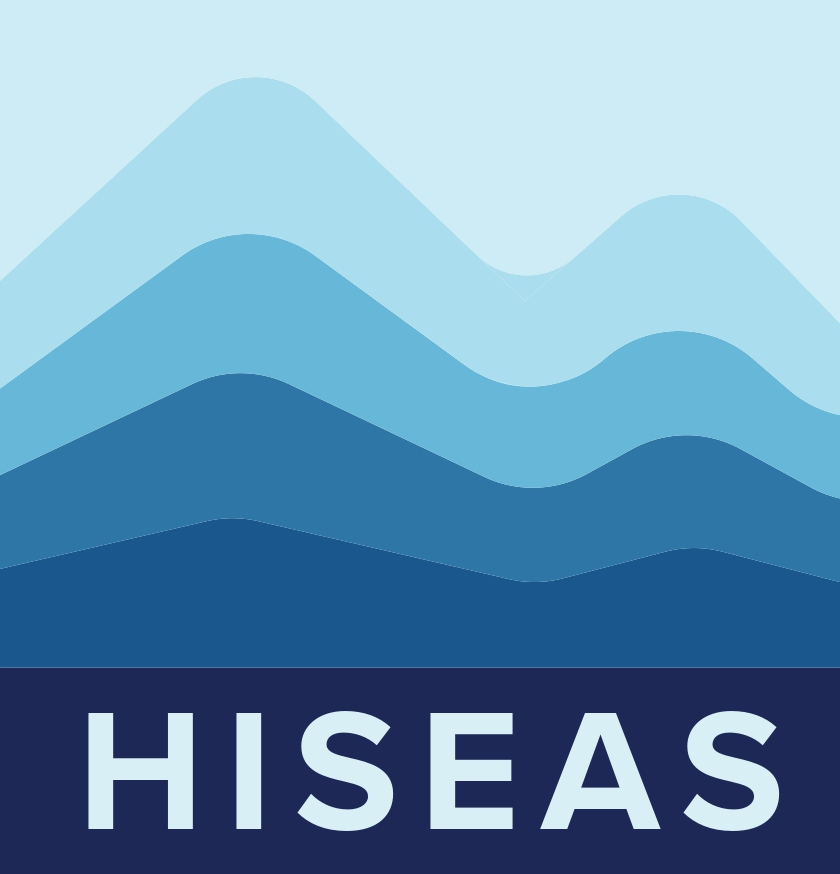
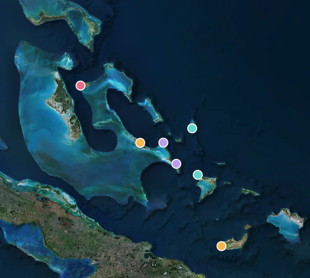

Field Photos
Coastlines and carbonates.
Photographs from our field expeditions.
Field albums.
Search all field photosOther field links

Cook Islands field portal
Field notes, mapped sites, and 3D reconstructions from our 2026 expedition.
Part of the HiSEAS project
Field atlas
Explore field sites and their geological context on a map.